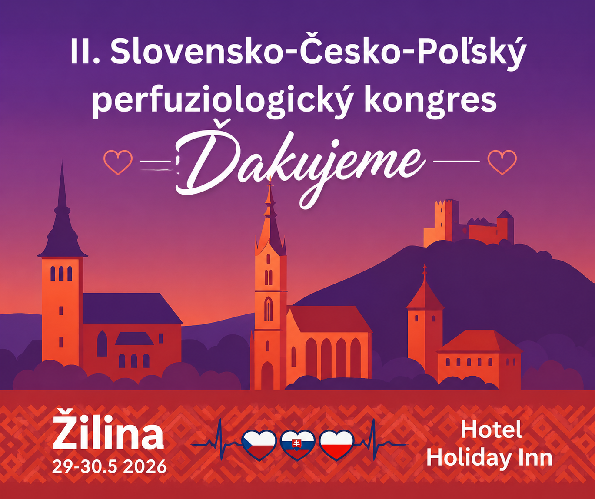

II. Slovensko-Česko-Poľský perfuziologický kongres
- Kedy: 29. – 30. mája 2026
- Kde: Žilina, Hotel Holiday Inn
Druhý ročník spoločného kongresu slovenských, českých a poľských perfuziológov. Ďakujeme všetkým prednášajúcim, účastníkom a partnerom za vydarené podujatie.